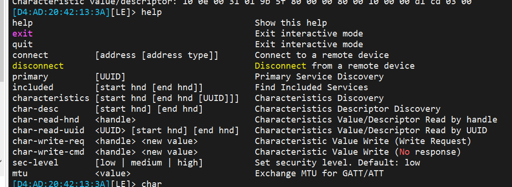
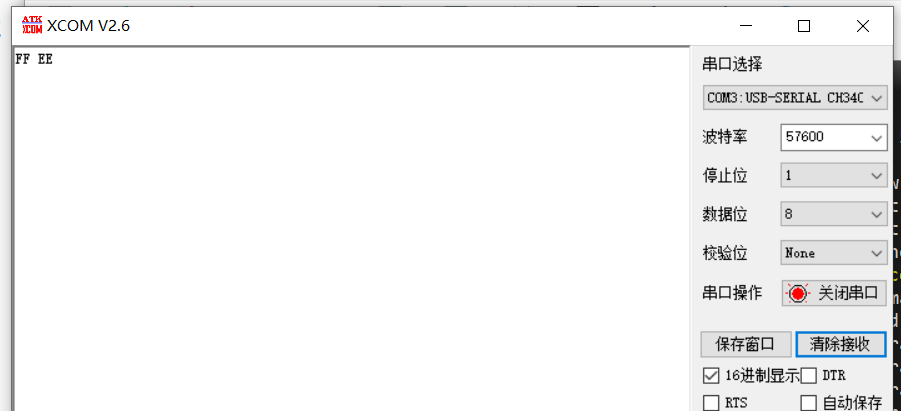

树莓派使用BLE蓝牙收发数据
树莓派4b，蓝牙为WH-BLE103a，是一款有人物联网芯片，内置了天线。

这个芯片到手多天了，最初使用手机和windows端的蓝牙调试都很正常连接，唯独树莓派不能连上，折腾多日，今天终于有了成果。
手上的树莓派4b安装的是ubuntu20.02，跟普通的树莓派版本不太一样，因此网上的教程很多难以复现，遇到各种各样的问题。
1.前期准备
首先树莓派需要安装蓝牙服务的有关软件，这块板子bluez版本为5.53，blueman为蓝牙图形化的工具。
1 | sudo apt install bluetooth pi-bluetooth bluez blueman |
WH-BLE103a蓝牙芯片可以通过串口进行一些设置，如设置名字、配对码、密码、波特率等等，默认名字为WH-BLE103，不需要密码，波特率为57600。指令部分可以参考这个说明文档WH-BLE103说明书
这里使用TTL转USB转接头直接和电脑连接，注意供电电压为3.3V。连接方式如下
| USB-TTL模块 | WH-BLE103蓝牙模块 |
|---|---|
| RX | UART_TX |
| TX | UART_RX |
| 3V3 | VBAT |
| GND | GND |
2.连接蓝牙
在树莓派输入hciconfig查看蓝牙模块是否可用，看到hci0服务即可。

扫描周围蓝牙设备
1 | sudo hcitool lescan |
看到需要的蓝牙mac信息后，ctrl+z停止扫描
连接BLE设备
1 | sudo gatttool -b 设备MAC地址 --interactive |
连接成功后就可以和BLE设备进行数据交互了。

3.数据交互
树莓派连接BLE设备后,可以通过gatttool或蓝牙编程接口来发送和接收数据。
使用gatttool,主要是通过交互模式:
了解特征值
不过在那之前，我们要了解BLE蓝牙的特征值，以及如何获取特征值。以下是claude的回答
BLE (Bluetooth Low Energy) 蓝牙特征值(Characteristics)是BLE协议中的一个重要概念。
BLE设备通过服务(Services)和特征值进行数据通信。
特征值可以理解为服务中的一个数据单元。每个特征值都有一个UUID作为标识,并包含了以下信息:
- 特征值所包含的数据值(Value)
- 描述符(Descriptors),对特征值进行说明或配置
- 属性(Properties),定义特征值支持的操作(读、写、通知等)
举个例子,一个BLE心率监测设备可能有一个心率测量服务(Heart Rate Service),其中包含心率计量特征值(Heart Rate Measurement Characteristic)。
这个特征值的UUID是00002A37-0000-1000-8000-00805f9b34fb。它的值就是当前的心率数值。
通过读写这个特征值,手机App就可以获取实时心率,或者设置监测参数。
所以简单来说,BLE特征值就是服务提供的一个数据单元,用于传输和交互数据。正确理解和使用特征值是开发BLE应用的关键。
我们要收发数据，就要知道“收”和“发”的特征值的uuid，怎么获取呢
在Linux下,可以使用蓝牙命令行工具gatttool,连接BLE设备后使用primary和characteristics命令获取服务和特征值:
1 | primary |

知道这些特征值有什么用呢？
根据你提供的这个BLE设备的characteristics信息,我可以做以下分析:
- 0x0002: 设备名称服务(Device Name Service)的设备名称characteristic。 properties为0x20表示可读,用于读取设备名称。
- 0x0006和0x0008: GAP服务(Generic Access Profile Service)中的外围设备首选连接参数characteristic。properties为0x4E表示可读写,用于协商主从设备的连接参数。
- 0x000a: 电池服务(Battery Service)的电池电平characteristic。properties为0x02表示可通知,可以订阅通知获取电池电量信息。
- 0x000d: 看起来是一个自定义服务的readable characteristic,可读取某种数据。
- 0x0010: 同样是一个自定义服务的writable characteristic,可以写入数据控制设备。
总结一下,根据UUID和properties可以判断出标准服务的一些基础characteristic,以及自定义服务可能的用途。但不确定的自定义服务需要参考开发文档才能确定。获取characteristics和分析它们的功能是开发BLE应用的关键第一步。
也就是说，根据handle可以确定这些服务的功能，handle相当于是uuid（标识）的简化，我们可以通过这个句柄（handle）来操作特征值，而char properties就是特征值的属性，定义特征值支持的操作(读、写、通知等)。
那么，后面的char value handle又有什么用呢？
在BLE协议中,Characteristic包含两个相关的Handle(句柄)概念:
- Characteristic Declaration Handle
这是Characteristic声明处的Handle,用于唯一标识这个Characteristic,通常简称为Characteristic Handle。
例如在你给的例子中,0x0002、0x0006等都是Characteristic Declaration的Handle。- Characteristic Value Handle
这是Characteristic的值对应的Handle,用于读写Characteristic的值,简称为Value Handle。
例如在你的例子中,0x0003、0x0007等都是Characteristic Value的Handle。
两者的区别和关系:
- Declaration Handle代表整个Characteristic,用于操作Characteristic。
- Value Handle代表Characteristic的值,用于直接读写值。
- Declaration Handle会指向Value Handle,客户端可以通过第一个找到后者。
- 在操作时,需要先用Declaration Handle来Discover,再用Value Handle来读写。
所以简单来说:
- Characteristic Handle是Characteristic的标识符。
- Value Handle是实际存储值的位置。
- 通过第一个找到第二个,从而对Characteristic进行操作。
也就是说我们实际操作时，是对Value Handle的值进行操作的
数据收发
了解了上述内容，我们就知道该怎样收发数据了
0x000d和0x0010分别是收和发数据的handle，而我们要操作的是0x000e和0x0011
输入help，可以看到收发数据的指令
例如，发送ffee
1 | char-write-req 0x0011 ffee |
通过串口就可以看到发送的内容了（16进制）
4.可能遇到的问题
在连接蓝牙和收发数据的过程中，可能会遇到各种问题，这里简单写一些
0.查看蓝牙日志
1 | sudo journalctl -u bluetooth -n 10 |
journalctl是Linux系统中管理日志的工具,具体作用如下:
- -u 参数表示查看指定服务的日志,这里我们查看蓝牙服务bluetooth的日志。
- sudo表示用root权限运行命令,查看系统日志通常需要root权限。
- bluetooth是蓝牙服务的系统服务名称。
- -n 参数表示查看最近多少条日志，可以不使用
使用这个命令可以方便地过滤出蓝牙服务产生的日志,包括启动时的诊断信息、运行时的调试信息、错误日志等。
1.Error: connect error: Function not implemented (38)

这种情况不会反映到日志中